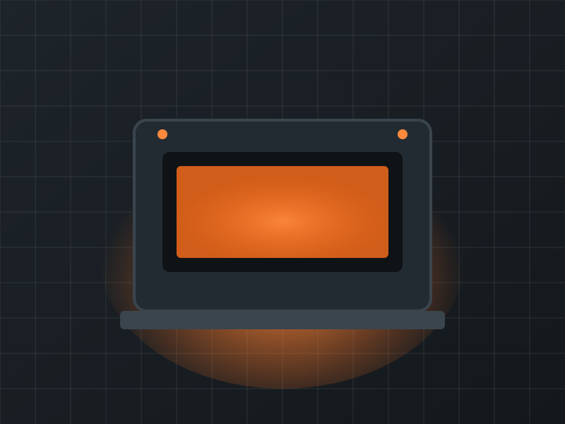
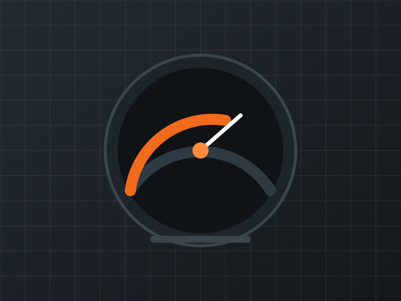
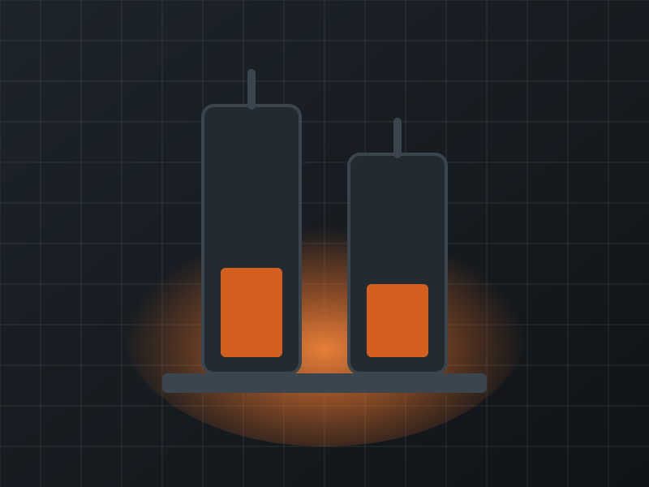
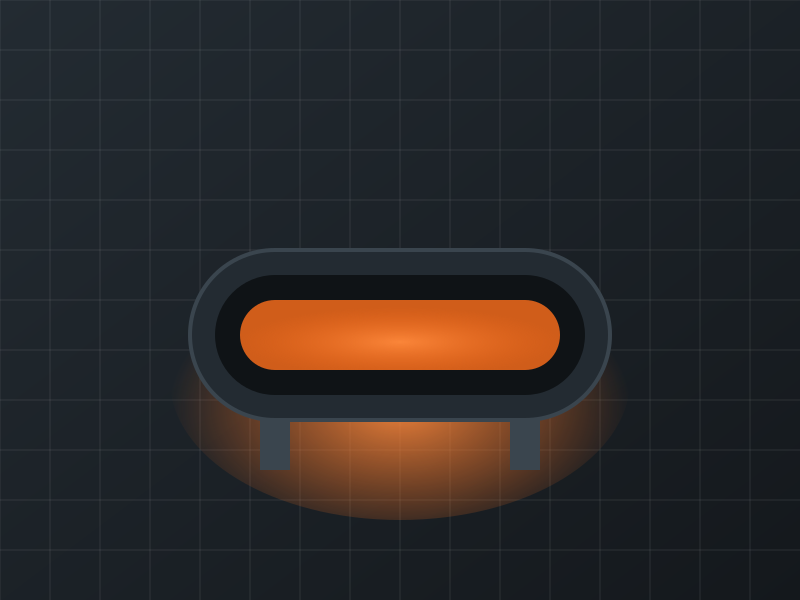

Industrial furnaces
Tempering, annealing and hardening furnaces, chamber, shaft, belt and tube furnaces – built to your specification.
Learn moreFor over 70 years we have been your partner for custom industrial furnace construction, measurement and control technology in production, research and quality assurance – with systems delivered to 39 countries.
Our philosophy has not changed since the early days: to never stand still, and to keep manufacturing and development at the highest level. Every furnace system is built to the specification of the customer and refined through continuous improvement.

Tempering, annealing and hardening furnaces, chamber, shaft, belt and tube furnaces – built to your specification.
Learn more
Single, cascade and multi-zone control and measured-value acquisition for production, research and quality assurance.
Learn more
Ruhr dilatometer, Gieseler plastometer and furnaces for quality, environmental compatibility and coking, to DIN, ISO and ASTM standards.
Learn moreFounded on 2 April 1935 in Düsseldorf, with decades of experience in steel and research.
Developed together with steelworks and institutes such as the Max Planck Institute for Iron Research, Jülich and Karlsruhe.
Furnace systems delivered to 39 countries since the first export in 1953.
We advise you without obligation and free of charge.

What began in 1935 with furnaces for the Solingen steel industry has grown into a broad range of furnace systems for production, research and quality control.
In close cooperation with Ruhrkohle AG we developed furnaces for determining quality, environmental compatibility and coking technology, adapted to DIN, ISO and ASTM standards. Since 1997 we also build the Ruhr dilatometer and the Gieseler plastometer.
Our clients include major German industrial companies and renowned research institutes, as well as customers around the world.
We would be happy to advise you without obligation and free of charge.
Contact us